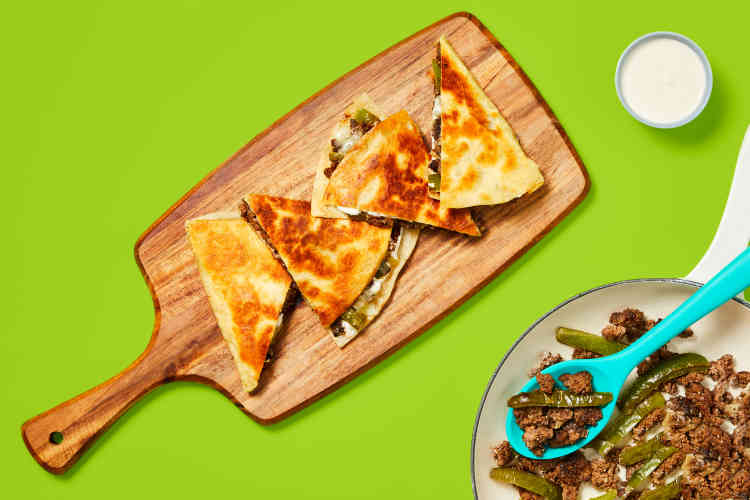

Home
One-Pan Cheesy Beef Tortilla Melts

Description
Melty cheese. Creamy sauce. One pan, and minimal clean up. Yeah, that's a
recipe for quick mealtime success! Tonight, we've got beef and green bell
pepper-stuffed tortilla melts filled with two luscious fillings: cheddar
cheese and a spicy cream sauce. And don't worry, there's extra sauce for
dipping, too!
Ingredients
- 10 oz Ground Beef
- 1 Green Bell Pepper
- 2 Flour Tortillas
- 1/2 cup Cheddar Cheese
- 1 tbsp Beef Stock Concentrate
- 4 tbsp Sour Cream
- 4 tbsp Cream Cheese
- 2 tsp Hot Sauce
- 1 tsp Cooking Oil
- 1 tbsp Butter
Steps
-
- Wash and dry produce.
- Halve, core, and thinly slice bell pepper into strips.
-
In a small microwave-safe bowl, combine sour cream, cream cheese, 1
tsp water, and hot sauce to taste. (Start with half the hot sauce,
then taste and add more from there if you like things spicy.)
Microwave until softened, 30 seconds. Stir to combine.
-
-
Heat a drizzle of oil in a large, preferably nonstick, pan over
medium-high heat. Add bell pepper and cook, stirring occasionally,
until slightly softened, 2-3 minutes.
-
-
Add beef to pan with bell pepper. Season with a big pinch of salt
and pepper. Cook, breaking up meat into pieces, until beef is
browned and cooked through and bell pepper is tender, 3-4 minutes.
Carefully drain any excess grease in pan.
- Stir in stock concentrate until combined. Turn off heat.
-
- Place tortillas on a clean work surface.
-
Spread one half of each tortilla with half the cream sauce (save the
rest for serving). Using a slotted spoon, top cream sauce with beef
filling, then sprinkle with cheddar. Fold tortillas in half to
create tortilla melts.
-
-
Wipe out pan used for filling. Melt 1 TBSP butter in same pan over
medium heat.
-
Add tortilla melts; cook until tortillas are golden brown and cheese
melts, 3-4 minutes per side.
- Transfer to a paper-towel-lined cutting board.
-
- Cut tortilla melts into wedges.
-
Divide between plates and serve with remaining cream sauce on top or
on the side for dipping.